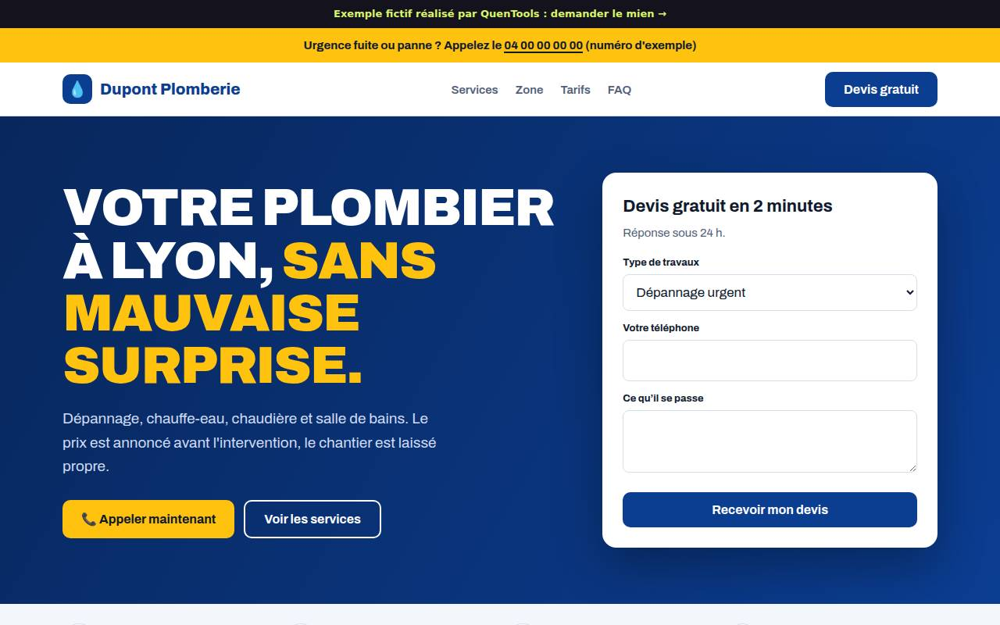
5 applications en ligne
Des outils simples qui font gagner du temps.
Je ne suis pas développeur. Pourtant, avec l’IA comme copilote, j’ai conçu et mis en ligne de vraies applications. Ici, je partage mes outils gratuits, je crée les vôtres, et je vous montre comment faire.
Outils gratuits, sans inscription · E-book offert : débuter avec Claude
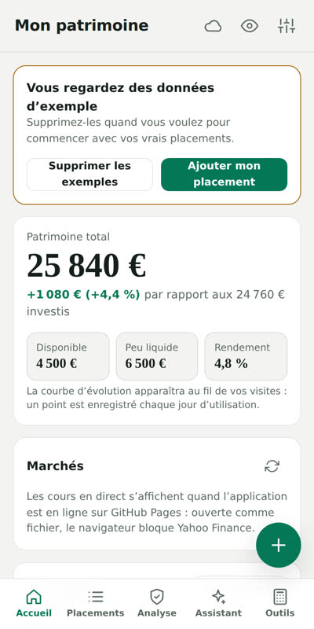
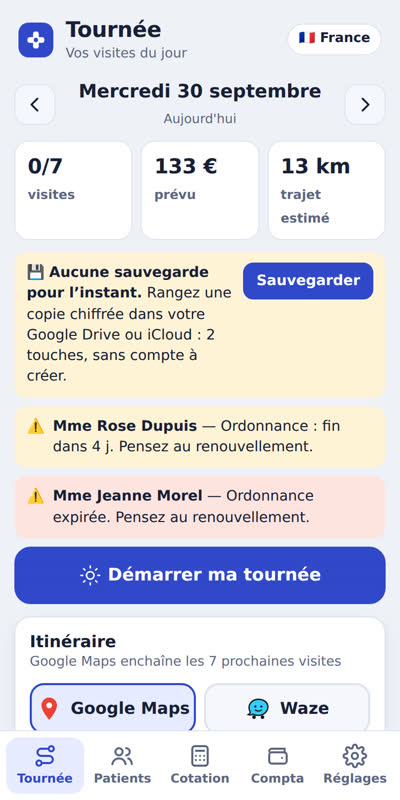
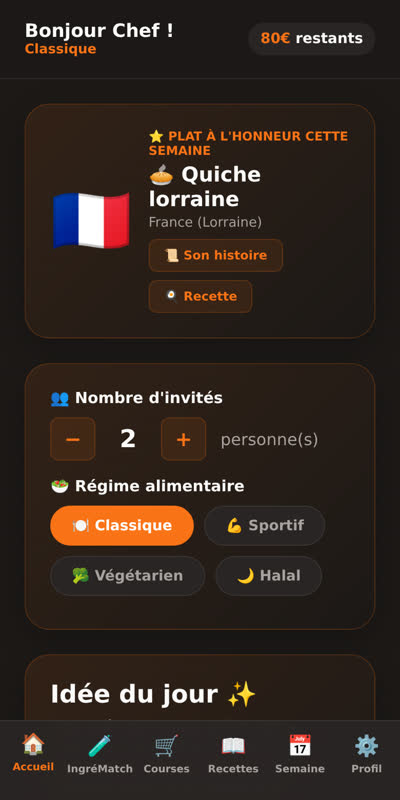
+ 6 700 vérifications
avant chaque mise à jour
avant chaque mise à jour
0 € outils gratuits
Exemples de sites
Un style pour chaque métier
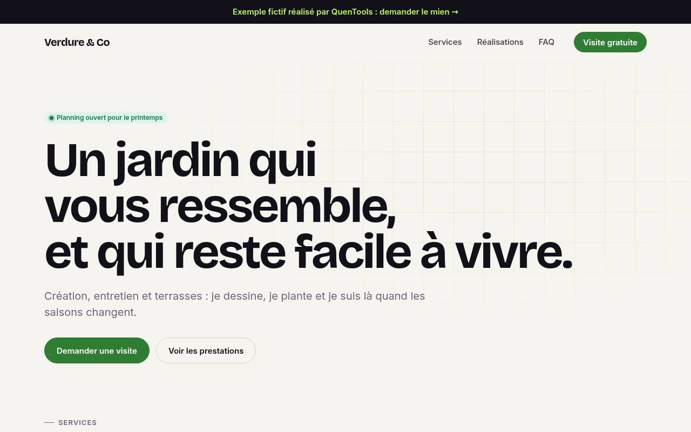
Paysagiste
Voir →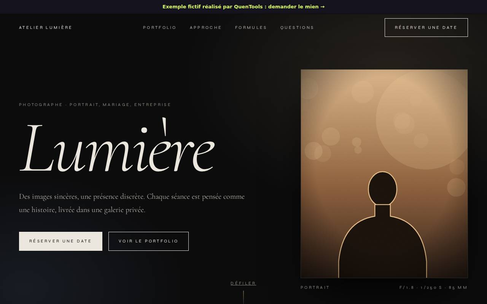
Photographe
Voir →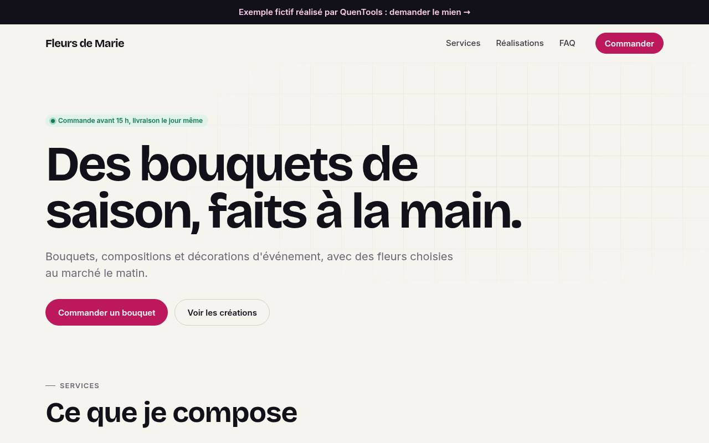
Fleuriste
Voir →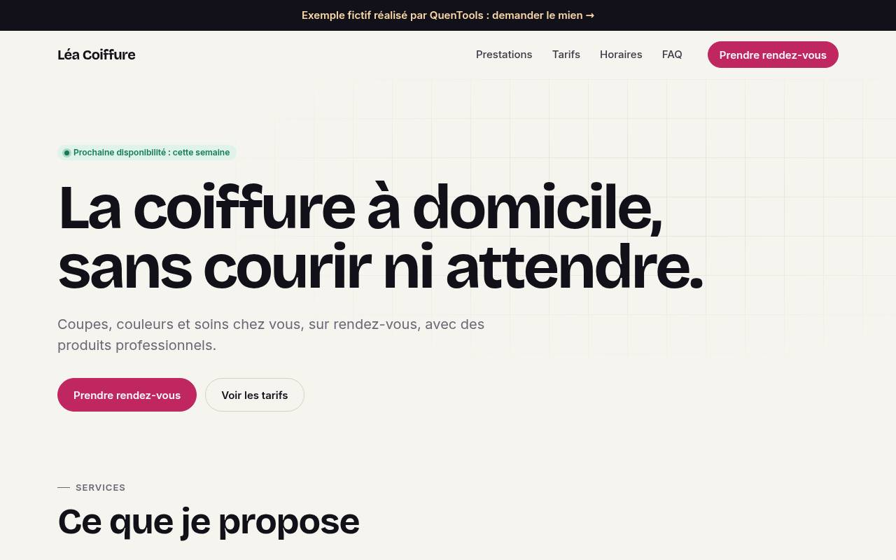
Coiffeuse à domicile
Voir →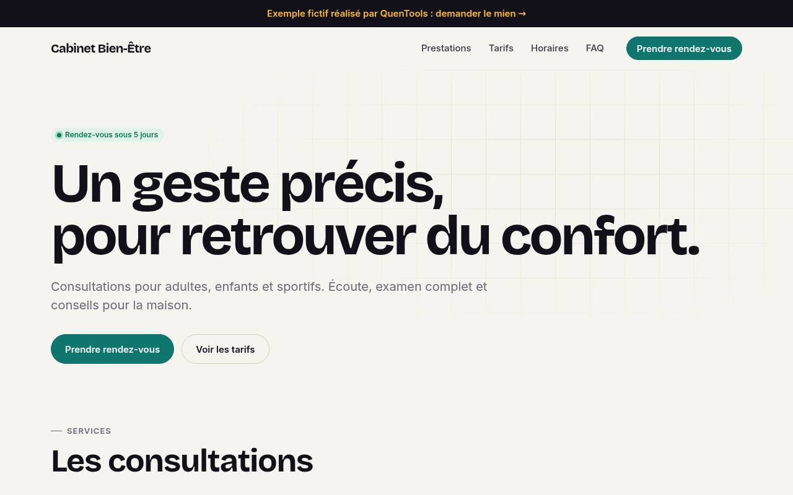
Ostéopathe
Voir →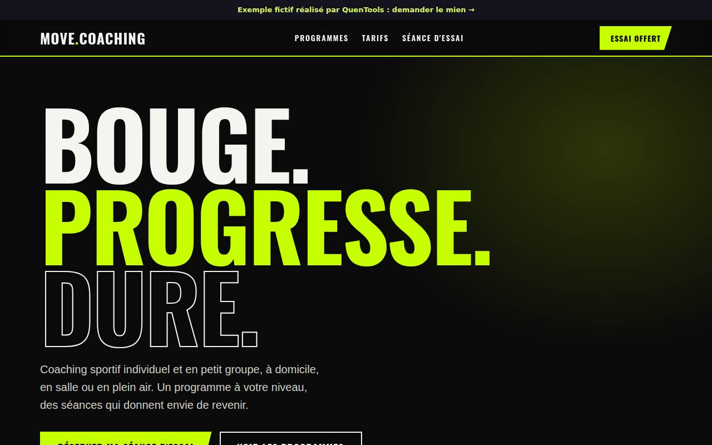
Coach sportif
Voir →
Restaurant
Voir →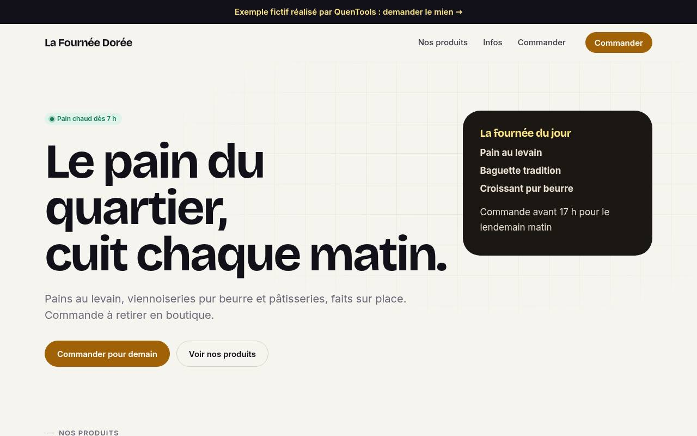
Boulangerie
Voir →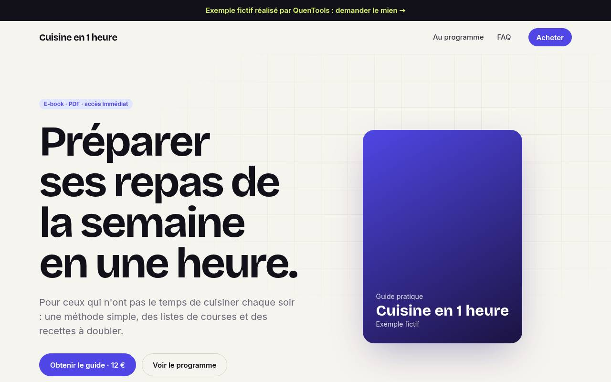
Page de vente d'e-book
Voir →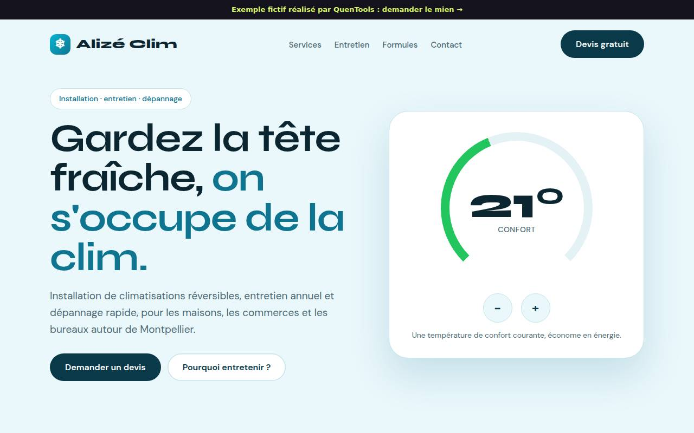
Climatisation et entretien
Voir →Entreprises fictives, à titre d’exemple. Voir tous les exemples →
Offres et tarifs
Plusieurs offres, toutes sur devis.
Une tâche répétitive qui vous fait perdre du temps, ou un site qui vous manque pour être trouvé ? Choisissez la formule qui vous ressemble, ou décrivez-moi votre besoin : je vous réponds avec un devis gratuit, adapté à votre projet et à votre budget.
Site vitrine
Sur devis
- De 1 à 5 pages, selon votre activité
- Formulaire de contact ou de devis, référencement de base
- Adapté au téléphone, mise en ligne incluse
Boutique en ligne
Sur devis
- Boutique Shopify, produits et fiches rédigées
- Pages légales, paiement et livraison réglés
- Abonnement Shopify à votre charge
Outil sur mesure
Sur devis
- Calcul de devis, suivi, réservation…
- Pensé pour votre métier, installable sur téléphone
- Cahier des charges simple, avant de démarrer
Chaque devis est gratuit et sans engagement. Il précise ce qui est inclus, le prix de la création et, si besoin, le suivi (hébergement, sauvegardes, modifications). Noms de domaine et abonnements Shopify au prix du fournisseur.
Vous m’expliquez
Votre besoin, avec vos mots. Le devis est gratuit.
Je vous montre
Une première version à tester, avant tout engagement sur la suite.
On ajuste et on publie
Les retouches, puis la mise en ligne. Vous êtes autonome.
Apprendre
Créer avec Claude, sans savoir coder.
Tout ce que j’ai appris en construisant mes applications avec l’IA. Le premier guide est disponible gratuitement, la formation complète arrive.
Gratuit · disponible18 chapitres
L’indispensable pour débuter avec Claude
Bien formuler ses demandes, éviter les pièges, créer un premier petit outil, et un défi de 7 jours pour prendre les bons réflexes.
📘 Récupérer mon e-book gratuitFormation complète · en préparation
Lancer son premier projet avec Claude
De l’idée à la mise en ligne : un vrai projet de bout en bout, avec la méthode que j’utilise au quotidien.
Être prévenu de sa sortie →J’ai commencé par un besoin simple : un outil qui n’existait pas, ou alors trop cher et trop compliqué. Je l’ai construit. Puis un deuxième. Puis une application complète.
Mon idée : des outils qui font une chose, et qui la font bien. Gratuits quand c’est possible, sur mesure quand il le faut.
FAQ
Questions fréquentes
Une autre question ? Écrivez-moi par e-mail ou en message privé sur TikTok.
Les outils gratuits le sont-ils vraiment ?
Oui : pas d’abonnement, rien à payer pour les utiliser. Certains proposent des options facultatives, comme brancher votre propre clé d’IA.
Où sont enregistrées mes données ?
D’abord sur votre appareil. Quand un outil propose une sauvegarde ou une synchronisation en ligne, ses réglages expliquent comment elle fonctionne ; vous choisissez de l’activer ou non.
Combien coûte un outil ou un site sur mesure ?
Cela dépend de ce qu’il doit faire. Le devis est gratuit : vous connaissez le prix avant que je commence, et vous validez une première version avant la suite.
Faut-il s’y connaître en informatique ?
Non. Vous m’expliquez votre besoin avec vos mots, je m’occupe du reste, mise en ligne comprise.
Qui est derrière QuenTools ?
Un créateur indépendant, pas développeur de métier, qui conçoit ses outils avec l’aide de l’IA. Toutes les applications présentées ici ont été réalisées de cette façon.
Contact
Un projet, une question ?
Décrivez votre besoin en quelques lignes : ce que vous faites aujourd’hui, et ce qui vous fait perdre du temps. Je vous réponds sous 48 h, par le formulaire, par e-mail ou en message privé sur TikTok.
Déjà client ? Accéder à mon espace client →